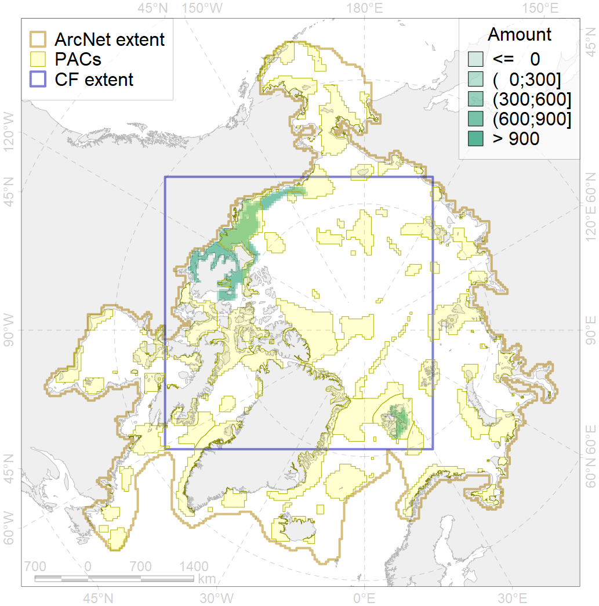
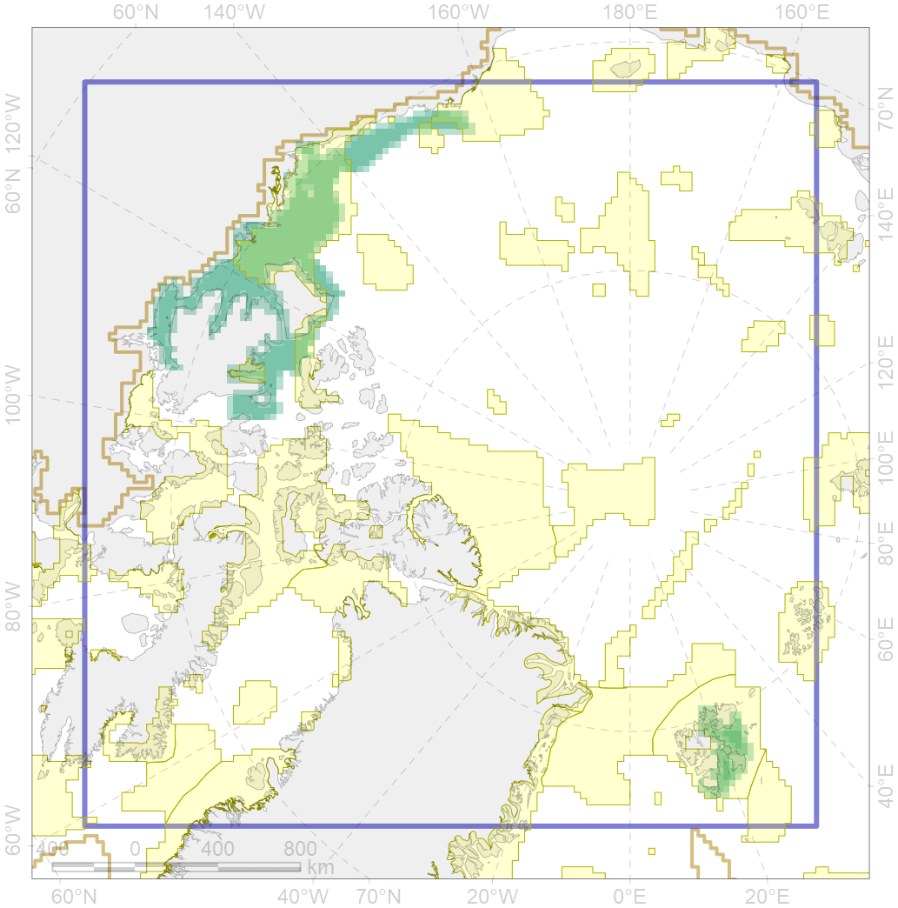

2036

| CF ID | 2036 |
| CF Name | Ringed seal foraging areas in the Beaufort Sea |
| Time Period | 1982-1998 |
| Source(s) | Born et al 2004; Harwood et al 2015; NOAA. 1988; Hamilton et al 2017; Harwood & Stirling 1992; L. Hartwig 2009 |
| Seasonality | July-September |
| Depth Horizon | 0-400 m |
| Methodology | Field surveys, data compilation, habitat preference research, traditional knowledge, expert input |
| Author Name | Irina Trukhanova |
| Notes | |
| Conservation Target Set in the Scenario | 0.24 |
| Conservation Target Achieved in the Scenario | 0.544 (Scenario: 226.8%) |
| PAC ID | Proportion in the PAC | Contribution to ArcNet Target Achievement | PAC’s Contribution to the Achieved Target |
|---|---|---|---|
| 30 | 8.5% | 34.4% | 15.2% |
| 60 | 2.8% | 7.9% | 3.5% |
| 62 | 37.6% | 149.3% | 65.8% |
| 63 | 2.7% | 7.5% | 3.3% |
| 64 | 1.4% | 4.2% | 1.8% |
| inner | 53.0% | 203.2% | 89.6% |
| outer | 47.0% | 23.5% | 10.4% |